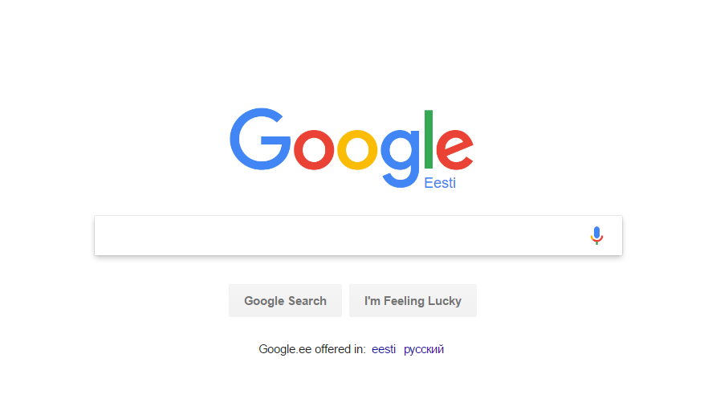
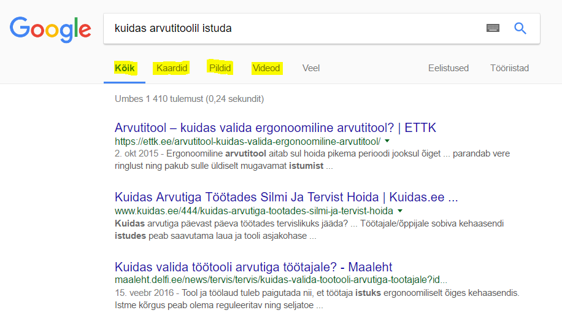

Internetiavarused on täis pahatahtlikke programme, viiruseid ja petuskeeme, mis võivad pahaaimamatu internetikasutaja kerge vaevaga konksu otsa tõmmata. Selleks, et internetti turvalisemalt kasutada, tasub meeles pidada mõningaid näpunäiteid.
PÕHITÕED
Kui kahtled, siis kustuta ära
Pahavara ning erinevad skeemid andmete varastamiseks muutuvad järjest targemaks ning kui e-postile saabub kahtlane kiri, mille päritolu sa ei tea, siis targem on kirja mitte avada ja see otse prügikasti saata. Kui siiski oled kahtlase meili avanud, siis kindlasti tuleks vältida kaasas olevate manuste või linkide avamist.
Kui meil suunab sind mingile kodulehele, kus sul konto on olemas, siis pigem kasuta lehele liikumiseks aadressiriba ning logi sinna sisse oma paroolidega.
Tee regulaarselt tarkvarauuendusi
Lülita sisse automaatne tarkvaravärskendamine nii oma telefonis, tahvelarvutis kui ka süle- ja lauaarvutis. See tagab, et kõik värskeimad turvavärskendused on sinu seadmes alati olemas.
Mõtle enne, kui tegutsed
Internetis surfates ole eriti tähelepanelik pakkumiste suhtes, mis nõuavad kohest tegutsemist, küsivad personaalseid isikuandmeid või on lihtsalt liiga head, et olla tõsi.
Tasuta lõunaid ei ole olemas.
PRIVAATSUSSÄTTED
Endast liigse informatsiooni jagamine sotsiaalvõrgustikes nagu Facebook ja Google on oht, mis võib kahjustada nii sinu mainet kui ka isiklikku vara. Kui oled harjunud kõike jagama – kohti, kus oled käinud või oled praegu, millist marsruuti pidi õhtuti jooksed, ning see kõik on lisaks sinu sõpradele nähtav ka inimestele, keda sa ei tunne, siis on oht, et seda infot kasutavad ära inimesed, kes su maja sinu Egiptuse-reisi ajal tühjaks teevad.
Samuti võivad sinu enda või sinu sõprade poolt ajajoonele lisatud pildid mõnest rajust peost mõjuda negatiivselt olemasolevale või potentsiaalsele tööandjale. Ebameeldivate olukordade vältimiseks vaata üle oma privaatsussätted nii Facebookis, Google’is kui ka teistes võrgustikes, millega oled liitunud. Privaatsussätete muutmiseks on tavaliselt lisatud valik seadete menüüsse.
“KÜPSISTE” BLOKEERIMINE
“Küpsisteks” kutsutakse andmeid, mida veebilehe külastamisel sinu arvutisse salvestatakse. See võib sisaldada infot, millal viimati sellel veebilehel käisid, mis on sinu kasutajanimi ning teadmist, kas sind peaks automaatselt sisse logima.
Kuigi see võib olla mugav, et ei pea alatasa oma kasutajanime ja parooli veebilehele sisestama, võib see siiski olla kahjulik, kui sinu arvutit kasutavad ka teised inimesed. “Küpsiste” blokeerimiseks võid kasutada näiteks AdBlock Plus’i või uBlock’i.
ÄRA HOIA KÕIKI MUNE ÜHES KORVIS
Paljud veebilehed pakuvad uue konto registreerimiseks võimalust ühendamiseks sinu Facebooki või Google’i kontoga. See tähendab, et sisselogimiseks saad kasutada samu paroole või kui juba oled ühte keskkonda sisse loginud, logitakse automaatselt sind sisse ka teise.
Taas – mugav lahendus, mis vähendab trükkimise vaeva, kuid juhul, kui peaksid kaotama kontrolli oma Facebooki konto üle, kaotad kontrolli ka kõikide teiste keskkondade üle, mis sellega ühendatud on.
AVALIKUD WIFID, TULEMÜÜRID JA VIIRUSETÕRJED
Avalikud wifi-võrgud
Kasuta võimalikult vähe avalikke wifi-levialasid (ilma paroolita wifi-d), kuna nende kaudu võidakse sinu nutiseadmesse üsna lihtsa vaevaga sisse murda. Kui su kodusel wifil ei ole veel tugevat parooli, siis viimane aeg on see sinna lisada. See suurendab sinu privaatsust ning hoiab ära n-ö wifi-vargad, kes sinu makstavat internetti kõrvalkorterist tasuta kasutavad.
Tulemüürid
Kasuta tulemüüre, mis hoiavad ära tahtmatu internetiliikluse sinu seadmes. Tavaliselt on need juba operatsioonisüsteemi sisse ehitatud, kuid vahel lülitavad kasutajad neid ise ka välja. Vaata üle seadistused operatsioonisüsteemides Windows 10 ja Mac OS X.
Viirusetõrjed
Lisaks olemasolevale tulemüürile on alati hea idee kasutada ka viirusetõrjeprogramme. Neid on saadaval nii tasuta versioone (AVG Free) kui ka tasulisi (Elioni Arvutikaitse).
Tasulistele versioonidele tulevad uute viiruste tõrjeks loodavad uuendused kiiremini ning neis ei kuvata reklaame tasulise versiooni soetamiseks.
TUGEVAMAD PAROOLID
Paroolide loomisel tuleks vältida loogiliselt ennustatavaid paroole nagu eesperekonnanimi123 või 0000 ning mõelda tuleks parool, mida pahalane ära ei arva. Mõtle välja suvaline sõna (nätieks sügistuul), asenda osa tähti numbritega ja täpitähed võõrtähtedega (syg1stuul) ning lisa parooli mõni suurtäht (syg1Stuul).
Kuna telefonide ekraanil olev mustus jätab tihti sinu joonistatud mustri ekraanile nähtavaks.
Sama lugu kehtib nutiseadmete ekraanilukkudega. Ekraanile joonistatavad mustrid on alati vähem turvalised kui pin-koodid või sõnalised paroolid, kuna telefonide ekraanil olev mustus jätab tihti sinu joonistatud mustri ekraanile nähtavaks. Kui siiski paned oma ekraanilukuks mustri, võta seadetest maha nähtav muster, et näpuga mustrit joonistades ei tekiks ekraanile rohelist joont, mis kinnitab mustri õigsust. Väldi samade paroolide kasutamist mitmes kohas, kuna ühe parooli kaotamisega kaotaksid sellisel juhul kontrolli mitme keskkonna üle.
SURFA TEADLIKULT
Aeg-ajalt kustuta oma internetiajalugu (Chrome’i kasutades saab seda teha lehe ülemises paremas nurgas asuva menüü kaudu). Kui sa ei kasuta enam oma Facebooki või Google’i postkasti, siis logi neist välja ning ära hoia neid brauseri vahelehtedel avatuna. Kui ülaltoodu ei ole sinu privaatsuse kaitsmiseks siiski piisav, võid internetis käimiseks kasutada ka spetsiaalset brauserit Tor, mis ei avalikusta sinu asukohta ega lehitsemisharjumusi.
Ettevõtted nagu Google koguvad sinu andmeid (sugu, vanus, asukoht jms), et kuvatavad reklaamid oleksid võimalikult personaalsed. Sama kehtib paljude teiste veebikeskkondade kohta ning kuigi me tavaliselt ei loe registreerumisel näidatavat privaatsuseeskirja, siis kahju see kindlasti ei teeks, kui teaksime, milliseid andmeid meie kohta kogutakse ning kellega neid jagatakse.
Allikas = www.digitark.ee/kuidas-turvaliselt-internetti-kasutada/
Google

Google Inc. on paljurahvuseline tehnoloogia- ja tarkvaraettevõte, mille asutasid 7. novembril 1998 Stanfordi ülikooli doktorandid Larry Page ja Sergei Brin. 2015. aastast on Google'i omanikuks Alphabet Inc. Google Search on selle ettevõtte arendatav maailma populaarseim interneti otsingumootor, Google'i esimene ja tähtsaim toode.
Google'i otsingumootor on kõige populaarsem otsingumootor hea põhjusega - nimelt on see kõige võimsam ning kõige turvalisem neist.
Iga kord kui teil tekib mõni küsimus üks kõik mis teema kohta, on peaaegu alati võimalik leida vastus läbi Google'i. Google otsib läbi kõik läbikäidavad veebilehed ning leiab kõik otsingu fraasile vastavad lehed populaarsuse järjekorras.
Just selle pärast on Google üks kõige olulisemaid veebilehti mida õppida kasutama. Ütleme, et teil on küsimus kuidas istuda toolis arvuti taga. Selle asemel, et hakata otsima seda informatsiooni kusagilt raamatust või kelleltki füüsiliselt küsida võib seda teha palju kiiremine Google'i abil.
- Minge lehele www.google.com Või vajutage siia lingi peale!
- Kirjuta oma soovitud otsingu fraas teksti kasti - sel juhul otsige "kuidas arvutitoolil istuda"

- Vajuta hiirega "Google Search/Google Otsing" nupu peale või vajutage klaviaaturil klahvi enter.
See sooritab otsingu ja siis te näete oma otsingu tulemusi. Avaneb leht teie tulemustega kus te saate soovil filtreerida oma otsinguid, näiteks saate otsida ainult pilte, videosid, kaarte vms.

Nii moodi saate te leida vastuseid üks kõik mis küsimustele, ulatudes arvuti probleemidest kuni näiteks retseptide või aadresside otsimiseni. Üks kõik mis teile pähe tuleb, Google'il on sellele vastus.